Guerrero Dataset
Historically the Guerrero salt mats were thought to be very phylogenetically sparse - very high saline location which seemed to be extremely niche. Culture methods bore out the limited diversity in the location. However, after expanding the diversity measurements to include high-throughput metagenomic/microbiomic sequence data, a different picture was discovered. Turns out this is one of the *most* phylogenetically diverse communities on the planet, with over 40 different phylum present.
Beginning analysis on the guerrero dataset. There are 10 files associated with the Guerrero Mat data. Each file corresponds to a different level from a column taken from the mat. The files are 16s gene data which was sanger sequenced, and therefore the full gene sequence. Used an outside program to transpose the matrix from the uclust table output: transpose
mat_01 - first layer (top)
mat_02 - 2nd layer (top)
mat_03 - 3rd layer (top)
mat_04 - 4th layer (middle)
mat_05 - 5th layer (middle)
mat_06 - 6th layer (middle)
mat_07 - 7th layer (bottom)
mat_08 - 8th layer (bottom)
mat_09 - 9th layer (bottom)
mat_10 - 10th layer (bottom)
Data input is fasta format of sanger sequenced 16s genes (truncated view):
>gi|364589549|gb|JN437545.1|;barcodelabel=mat_01 Uncultured organism clone SBXZ_6525 16S ribosomal RNA gene, partial sequence
ACACATGCAAGTCGAACGAAGCCCTCGGGCGTAGTGGCGGACGGGTGAGTAACGCGTGAGAATCTACCTT
>gi|364589548|gb|JN437544.1|;barcodelabel=mat_01 Uncultured organism clone SBXZ_6524 16S ribosomal RNA gene, partial sequence
CTTACACATGCAAGTCGAACGCAACGTTCGGGTTGAGTGGCGGACGGGTGAGTAACGCGTGAGAATCTGC
>gi|364589547|gb|JN437543.1|;barcodelabel=mat_01 Uncultured organism clone SBXZ_6523 16S ribosomal RNA gene, partial sequence
TGGCCCTACGGGGGAAAGATTATCGCCATAGGATGGGCCCGCGTCAGATTAGCTAGTTGGTAGGGTAACG
I used the UCLUST algorithms, provided by Robert Edgar (which is part of the QIIME package, so you could do all the clustering through QIIME as well). You can get the program here
The commands I used to cluster the OTUs are as follows:
$ usearch -derep_fulllength fasta_reads.fasta -output derep_fasta.fasta -sizeout
$ usearch -sortbysize derep_fasta.fasta -output sorted -minsize 2
$ usearch -cluster_otus sorted.fasta -otus old_otus.fasta
$ python ~/programs/usearch/fasta_number.py old_otus.fasta OTU_ > otus.fasta
$ usearch -usearch_global fasta_reads.fasta -db otus.fasta -strand plus -id 0.97 -uc readmap
$ python ~/programs/usearch/uc2otutab.py readmap > table
$ usearch8 -utax otus.fasta -db ~/Documents/rdp_16s.fa -strand plus -utax_rawscore -tt ~/Documents/rdp_16s.tt -utaxout utax
$ transpose -i 6000x20 -t table >transposed_table
# install packages (Run this before trying to knit - ctrl+enter on the line commented out to prevent error during knitting)
#install.packages(c("vegan", "ecodist", "labdsv", "ape", "ade4", "smacof", "GUniFrac"))
# load packages
library(vegan)
## Loading required package: permute
## Loading required package: lattice
## This is vegan 2.2-1
##
## Attaching package: 'ecodist'
##
## The following object is masked from 'package:vegan':
##
## mantel
## Loading required package: mgcv
## Loading required package: nlme
## This is mgcv 1.8-3. For overview type 'help("mgcv-package")'.
## Loading required package: MASS
##
## Attaching package: 'labdsv'
##
## The following objects are masked from 'package:ecodist':
##
## nmds, pco
##
## The following object is masked from 'package:stats':
##
## density
library(ape)
library(ade4)
##
## Attaching package: 'ade4'
##
## The following object is masked from 'package:vegan':
##
## cca
## Loading required package: rgl
library(GUniFrac)
dat <- read.table("~/projects/guerrero/transposed_table", header=TRUE,row.names=1, quote="\"")
dat[1:5]
## OTU_4973 OTU_41 OTU_43 OTU_206 OTU_14
## mat_01 1 14 26 57 163
## mat_02 0 1 4 28 65
## mat_03 0 1 18 8 12
## mat_04 0 0 22 2 5
## mat_05 0 0 17 5 6
## mat_06 0 0 25 5 8
## mat_07 0 0 43 1 1
## mat_08 0 0 55 2 2
## mat_09 0 0 378 3 8
## mat_10 0 0 68 2 9
Metric Multidimensional scaling:
There are multiple different ways of doing MDS, these are metric methods, which you can see examples of here
MDS with cmdscale
# 1) MDS 'cmdscale'
mds1 = cmdscale(dat.dist, k=2)
# plot
plot(mds1[,1], mds1[,2], type = "n", xlab = "", ylab = "", axes = FALSE,
main = "cmdscale (stats)")
text(mds1[,1], mds1[,2], labels(dat.dist), cex=0.9)
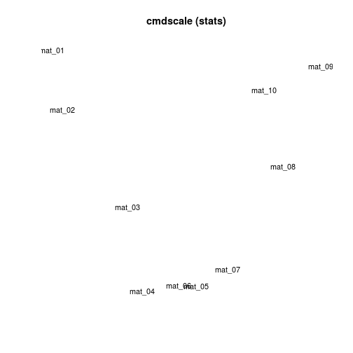
MDS with wcmdscale - Weighted Classical Multidimensional Scaling
# 1) MDS 'wcmdscale'
mds1 = wcmdscale(dat.dist, k=2)
# plot
plot(mds1[,1], mds1[,2], type = "n", xlab = "", ylab = "", axes = FALSE,
main = "wcmdscale (vegan)")
text(mds1[,1], mds1[,2], labels(dat.dist), cex=0.9)
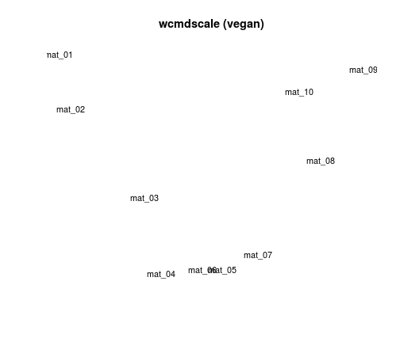
MDS with pco - Principal Coordinates Analysis
# 1) MDS
mds3 = pco(dat.dist, k=2)
# plot
plot(mds3$points[,1], mds3$points[,2], type = "n", xlab = "", ylab = "",
axes = FALSE, main = "pco (ecodist)")
text(mds3$points[,1], mds3$points[,2], labels(dat.dist), cex = 0.9)
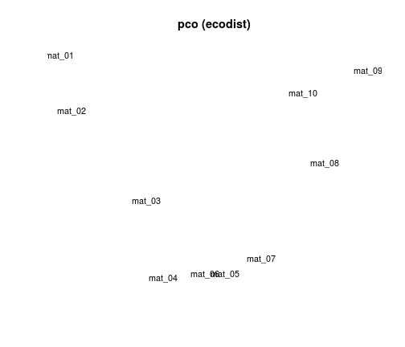
MDS with smocofSym - multidimensional scalling with stress minimization
# 7) MDS 'smacofSym'
mds7 = smacofSym(dat.dist, ndim=2)
# plot
plot(mds7$conf[,1], mds7$conf[,2], type = "n", xlab = "", ylab = "",
axes = FALSE, main = "smacofSym (smacof)")
text(mds7$conf[,1], mds7$conf[,2], labels(dat.dist), cex = 0.9)
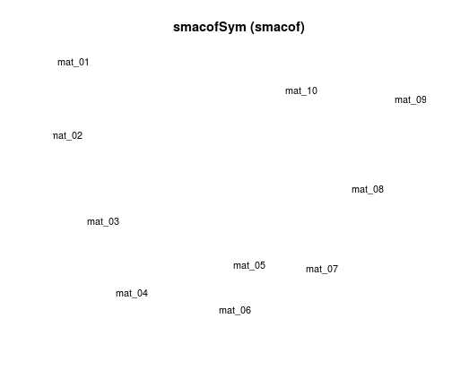
Non-metric Multidimensional scaling:- see here for more info
dat.mds <- metaMDS(dat,trymax=50)
## Square root transformation
## Wisconsin double standardization
## Run 0 stress 0.03603821
## Run 1 stress 0.03603824
## ... procrustes: rmse 0.0001196129 max resid 0.0002319817
## *** Solution reached
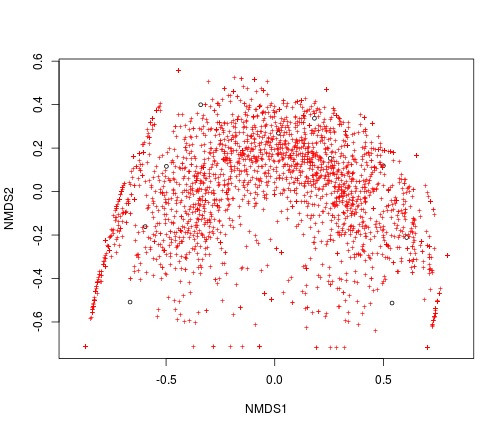
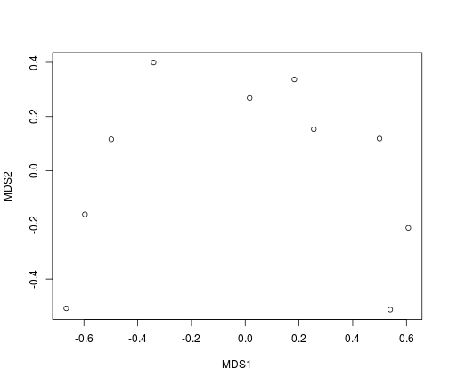
dat.mds.eucl <- metaMDS(dat, distance="euclidean", k=3, trymax=50, autotransform=FALSE)
## Run 0 stress 0.004202912
## Run 1 stress 0.005419644
## Run 2 stress 0.00468095
## ... procrustes: rmse 0.02715713 max resid 0.04476593
## Run 3 stress 0.00374559
## ... New best solution
## ... procrustes: rmse 0.07678549 max resid 0.1397041
## Run 4 stress 0.1391796
## Run 5 stress 0.005363846
## Run 6 stress 0.004135583
## ... procrustes: rmse 0.01375152 max resid 0.02404074
## Run 7 stress 0.004409486
## Run 8 stress 0.00477019
## Run 9 stress 0.004525489
## Run 10 stress 0.003607563
## ... New best solution
## ... procrustes: rmse 0.0219307 max resid 0.0376072
## Run 11 stress 0.005383756
## Run 12 stress 0.004561229
## Run 13 stress 0.00478669
## Run 14 stress 0.003671154
## ... procrustes: rmse 0.009813629 max resid 0.01545307
## Run 15 stress 0.003921845
## ... procrustes: rmse 0.03203453 max resid 0.05787198
## Run 16 stress 0.005275266
## Run 17 stress 0.004316516
## Run 18 stress 0.003475214
## ... New best solution
## ... procrustes: rmse 0.01791631 max resid 0.03658657
## Run 19 stress 0.004386114
## Run 20 stress 0.004557172
## Run 21 stress 0.00334447
## ... New best solution
## ... procrustes: rmse 0.008481415 max resid 0.01523329
## Run 22 stress 0.005239484
## Run 23 stress 0.004790478
## Run 24 stress 0.005225082
## Run 25 stress 0.003771642
## ... procrustes: rmse 0.01914114 max resid 0.03146662
## Run 26 stress 0.005535925
## Run 27 stress 0.005746924
## Run 28 stress 0.005249805
## Run 29 stress 0.005077831
## Run 30 stress 0.005333446
## Run 31 stress 0.003749936
## ... procrustes: rmse 0.01973963 max resid 0.03252535
## Run 32 stress 0.004779167
## Run 33 stress 0.007046649
## Run 34 stress 0.004986428
## Run 35 stress 0.004286067
## Run 36 stress 0.005264556
## Run 37 stress 0.004699999
## Run 38 stress 0.005359218
## Run 39 stress 0.004921137
## Run 40 stress 0.00425208
## Run 41 stress 0.005258772
## Run 42 stress 0.03352013
## Run 43 stress 0.004369566
## Run 44 stress 0.004063205
## Run 45 stress 0.004202557
## Run 46 stress 0.003736516
## ... procrustes: rmse 0.01924862 max resid 0.03166944
## Run 47 stress 0.004450485
## Run 48 stress 0.00419446
## Run 49 stress 0.004116577
## Run 50 stress 0.003960423
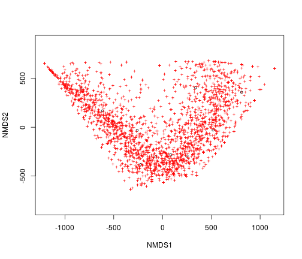
dat.mds.bray <- metaMDS(dat, distance="bray", k=3, trymax=50, autotransform=FALSE)
## Run 0 stress 0.0001187749
## Run 1 stress 0.001313494
## Run 2 stress 0.0002306352
## ... procrustes: rmse 0.09379743 max resid 0.1713321
## Run 3 stress 0.007739546
## Run 4 stress 0.000320383
## ... procrustes: rmse 0.07074713 max resid 0.1263788
## Run 5 stress 0.003830809
## Run 6 stress 0.0006634996
## Run 7 stress 0.001953219
## Run 8 stress 0.008771571
## Run 9 stress 0.0328424
## Run 10 stress 0.006532357
## Run 11 stress 0.0001529888
## ... procrustes: rmse 0.01085843 max resid 0.02066393
## Run 12 stress 0.009265384
## Run 13 stress 0.002042334
## Run 14 stress 9.597263e-05
## ... New best solution
## ... procrustes: rmse 0.02545477 max resid 0.04368468
## Run 15 stress 0.003881078
## Run 16 stress 9.611299e-05
## ... procrustes: rmse 0.07550868 max resid 0.1162909
## Run 17 stress 0.008749665
## Run 18 stress 0.001985023
## Run 19 stress 0.01073208
## Run 20 stress 0.0001407351
## ... procrustes: rmse 0.07443741 max resid 0.1374463
## Run 21 stress 0.008818385
## Run 22 stress 0.007902163
## Run 23 stress 0.0006201211
## Run 24 stress 9.844559e-05
## ... procrustes: rmse 0.02454185 max resid 0.03941742
## Run 25 stress 0.0005858345
## ... procrustes: rmse 0.09815069 max resid 0.1831497
## Run 26 stress 0.002143806
## Run 27 stress 0.001242992
## Run 28 stress 0.000304154
## ... procrustes: rmse 0.06448267 max resid 0.09712173
## Run 29 stress 0.001451797
## Run 30 stress 0.008761616
## Run 31 stress 0.00322783
## Run 32 stress 0.005986194
## Run 33 stress 0.003777017
## Run 34 stress 0.003456039
## Run 35 stress 0.0003038885
## ... procrustes: rmse 0.02140854 max resid 0.03992115
## Run 36 stress 0.001892625
## Run 37 stress 0.003548299
## Run 38 stress 0.001333051
## Run 39 stress 0.002718619
## Run 40 stress 0.002282201
## Run 41 stress 0.001568183
## Run 42 stress 0.005182504
## Run 43 stress 0.2257866
## Run 44 stress 0.003055073
## Run 45 stress 0.005677125
## Run 46 stress 0.001215487
## Run 47 stress 0.00016317
## ... procrustes: rmse 0.06856546 max resid 0.1026268
## Run 48 stress 0.007968741
## Run 49 stress 0.0006927887
## Run 50 stress 0.001694786
## Warning in metaMDS(dat, distance = "bray", k = 3, trymax = 50,
## autotransform = FALSE): Stress is (nearly) zero - you may have
## insufficient data
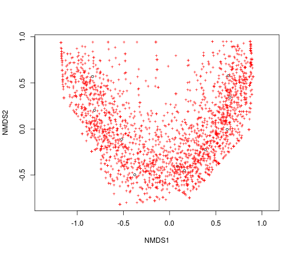
dat.vegdist <- vegdist(dat)
groups = c("top","top","top","middle","middle","middle","bottom","bottom","bottom","bottom")
dat.anosim <- anosim(dat.vegdist, grouping=groups, permutations = 999)
dat.anosim
##
## Call:
## anosim(dat = dat.vegdist, grouping = groups, permutations = 999)
## Dissimilarity: bray
##
## ANOSIM statistic R: 0.7879
## Significance: 0.002
##
## Permutation: free
## Number of permutations: 999
##
## Call:
## anosim(dat = dat.vegdist, grouping = groups, permutations = 999)
## Dissimilarity: bray
##
## ANOSIM statistic R: 0.7879
## Significance: 0.002
##
## Permutation: free
## Number of permutations: 999
##
## Upper quantiles of permutations (null model):
## 90% 95% 97.5% 99%
## 0.247 0.338 0.434 0.505
##
## Dissimilarity ranks between and within classes:
## 0% 25% 50% 75% 100% N
## Between 3 19.00 29 37.00 45 33
## bottom 2 4.75 10 13.75 20 6
## middle 1 5.50 10 10.50 11 3
## top 6 7.00 8 16.00 24 3
## Warning in bxp(structure(list(stats = structure(c(3, 19, 29, 37, 45, 2, :
## some notches went outside hinges ('box'): maybe set notch=FALSE
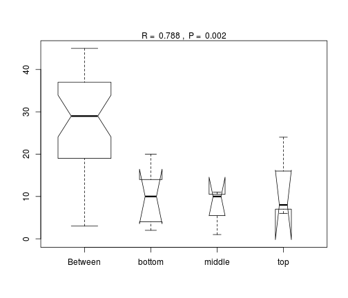
Procrustes- Comparing Ordinations : see here for more info
Also, see here for information on the unifrac distance method
Here we will compare using a unifrac distance matrix to a Bray-curtis distance matrix. It is important to note a couple of things, first there is no unifrac distance calculator in vegan (that I could find), so we need a new package (which I called earlier in the script). Second unifrac distances is actually based on a tree, and how the sequences from each sample fall on that tree. Therefore, you need to build a tree! And perhaps more importantly, you need to build an alignment first, in order to build the tree. I did so with mafft, and then used FastTree to compute the tree.
dat.mds.bray <- metaMDS(dat, distance="bray", k=3, trymax=50, autotransform=FALSE)
## Run 0 stress 0.0001187749
## Run 1 stress 0.1495222
## Run 2 stress 0.002150533
## Run 3 stress 0.0107393
## Run 4 stress 9.829918e-05
## ... New best solution
## ... procrustes: rmse 0.06760515 max resid 0.09539946
## Run 5 stress 0.000241746
## ... procrustes: rmse 0.06977863 max resid 0.1060243
## Run 6 stress 9.784758e-05
## ... New best solution
## ... procrustes: rmse 0.05272967 max resid 0.08053348
## Run 7 stress 0.0003330322
## ... procrustes: rmse 0.05990925 max resid 0.1140577
## Run 8 stress 0.0042326
## Run 9 stress 0.001340256
## Run 10 stress 0.0006172095
## Run 11 stress 0.0007864775
## Run 12 stress 0.002042784
## Run 13 stress 0.000110462
## ... procrustes: rmse 0.04506455 max resid 0.07685848
## Run 14 stress 0.008229426
## Run 15 stress 9.887635e-05
## ... procrustes: rmse 0.03278099 max resid 0.04284325
## Run 16 stress 0.04030587
## Run 17 stress 0.001550736
## Run 18 stress 0.001412182
## Run 19 stress 0.00331111
## Run 20 stress 0.007965028
## Run 21 stress 0.02893757
## Run 22 stress 9.717634e-05
## ... New best solution
## ... procrustes: rmse 0.01367231 max resid 0.02437232
## Run 23 stress 0.008491583
## Run 24 stress 0.007662587
## Run 25 stress 0.005247501
## Run 26 stress 0.1495222
## Run 27 stress 0.01858673
## Run 28 stress 0.004633765
## Run 29 stress 0.002638631
## Run 30 stress 0.00303414
## Run 31 stress 0.005072695
## Run 32 stress 0.0002351615
## ... procrustes: rmse 0.04246566 max resid 0.06510603
## Run 33 stress 0.001075241
## Run 34 stress 0.001358289
## Run 35 stress 0.0004500807
## ... procrustes: rmse 0.04236568 max resid 0.06484945
## Run 36 stress 0.0002399725
## ... procrustes: rmse 0.04398817 max resid 0.06417289
## Run 37 stress 0.002089691
## Run 38 stress 0.0004131027
## ... procrustes: rmse 0.06198818 max resid 0.1112845
## Run 39 stress 0.0003414969
## ... procrustes: rmse 0.06153405 max resid 0.09991846
## Run 40 stress 0.0005590506
## ... procrustes: rmse 0.04593516 max resid 0.09400999
## Run 41 stress 9.449475e-05
## ... New best solution
## ... procrustes: rmse 0.04306264 max resid 0.08434964
## Run 42 stress 0.001052542
## Run 43 stress 0.01252502
## Run 44 stress 0.008495631
## Run 45 stress 0.000531441
## ... procrustes: rmse 0.07910672 max resid 0.1337613
## Run 46 stress 0.01077011
## Run 47 stress 9.849816e-05
## ... procrustes: rmse 0.06836801 max resid 0.09926239
## Run 48 stress 9.980793e-05
## ... procrustes: rmse 0.04673841 max resid 0.07166716
## Run 49 stress 0.004278226
## Run 50 stress 0.0001325516
## ... procrustes: rmse 0.08313003 max resid 0.1252051
## Warning in metaMDS(dat, distance = "bray", k = 3, trymax = 50,
## autotransform = FALSE): Stress is (nearly) zero - you may have
## insufficient data
plot(dat.mds.bray$points)
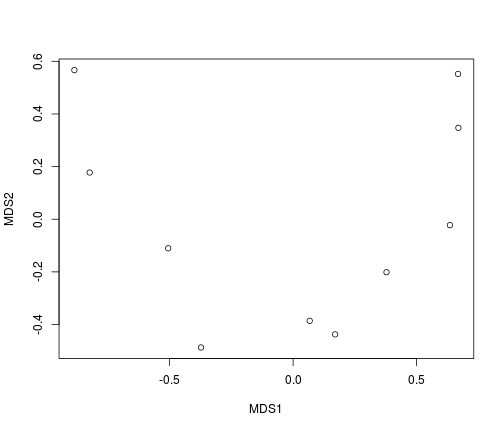
tree <- read.tree("~/projects/guerrero/otus.tree")
rooted_tree = multi2di(root(tree, "OTU_5140"))
dat.mds.unifrac <- GUniFrac(dat, rooted_tree, alpha=c(0,0.5,1))$unifracs
dw <- dat.mds.unifrac[,,"d_1"] # Weighted UniFrac
du <- dat.mds.unifrac[, , "d_UW"] # Unweighted UniFrac
dv <- dat.mds.unifrac[, , "d_VAW"] # Variance adjusted weighted UniFrac
d0 <- dat.mds.unifrac[, , "d_0"] # GUniFrac with alpha 0
d5 <- dat.mds.unifrac[, , "d_0.5"] # GUniFrac with alpha 0.5
plot(dw)
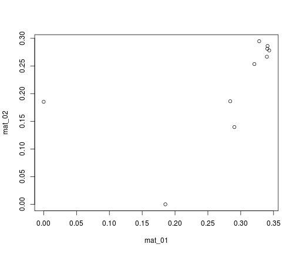
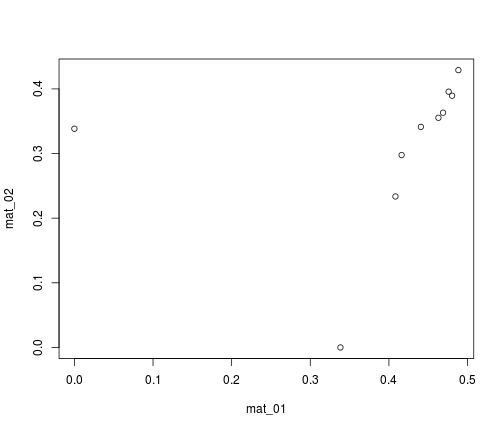
#procrustes(dat.mds.bray, dat.mds.eucl)
dat.mds.bray <-vegdist(dat, "bray")
pro_test <-protest(dat.mds.bray, du)
plot(pro_test)
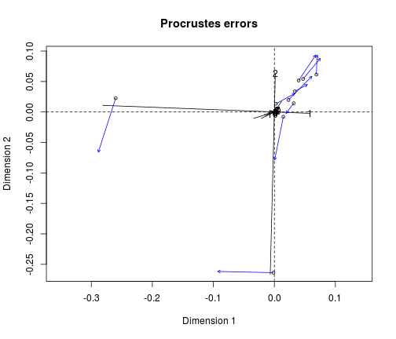
##
## Call:
## protest(X = dat.mds.bray, Y = du)
##
## Procrustes Sum of Squares (m12 squared): 0.1596
## Correlation in a symmetric Procrustes rotation: 0.9167
## Significance: 0.001
##
## Permutation: free
## Number of permutations: 999